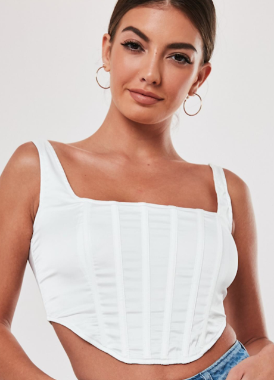
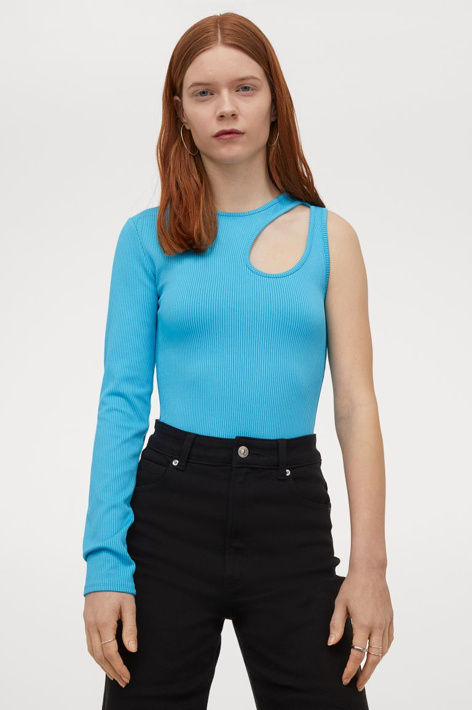
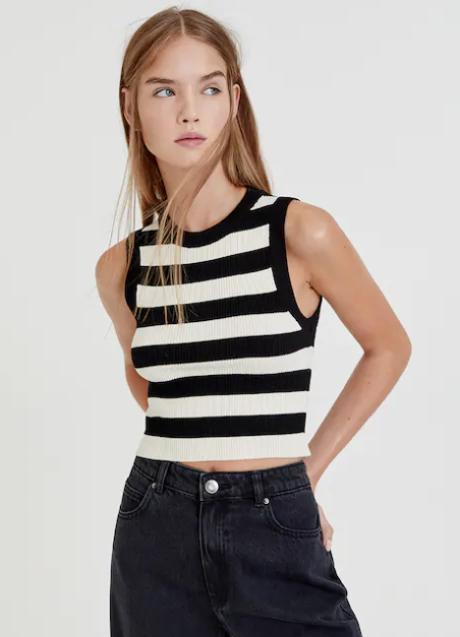

Las influencers VIP españolas coinciden: el top corsé blanco es el más deseado del verano
La lucha por convertirse en el top más deseado del verano 2021 continúa con tres contendientes finalistas: el top negro minimalista en versión tubo o palabra de honor o con asimetrías y detalles cut out; los tops de crochet inspirados en el 'revival' de la tendencia años 70 y, por último, el top corsé. Confesamos que este último es el más difícil de llevar en pleno agosto, pues supone una rigidez que se hace cuesta arriba con el calor. Sin embargo, Teresa Bass tiene razón: merece la pena el sacrificio porque este top hace una silueta preciosa. Tanto, que Gala González ha decidido sacar una variante veraniega y ligera en su marca, Amlul.
• La verdad es que nos entusiasma esta versión light del top corsé que se ha marcado la poderosa influencer española Gala González para su marca. En realidad es un híbrido: mezcla el patrón corsetero del pecho con el cuerpo propio de una camiseta . La genialidad de añadir botones en el frontal para poder abrirlo es uno de esos detalles de diseño que justifican el precio de este top único: lo tienes en la tienda online de Amlul por 110 euros (por suerte está rebajado, porque costaba 210 euros).
TENDENCIAS

Turquesa: el color definitivo para elevar tus looks más veraniegos y potenciar el bronceado
unque entre las tonalidades cromáticas favoritas del verano nunca puede faltar el blanco, la lista no está completa si no citamos otros más atrevidos aunque igual de favorecedores como el turquesa.

Blanco y negro: 3 tops de Pull&Bear que puedes combinar con todo y sientan de maravilla
Asimétrico o cropped, son prendas a la última que se van a convertir en las protagonistas de cualquier estilismo, formal o casual.